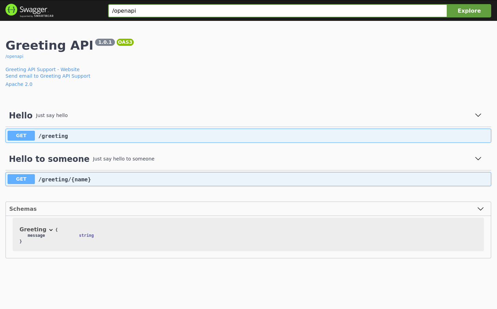

Quarkus - Quarkus Extension for Spring Web API
While users are encouraged to use JAX-RS annotation for defining REST
endpoints, Quarkus provides a compatibility layer for Spring Web in the form
of the spring-web extension.
This guide explains how a Quarkus application can leverage the well known Spring Web annotations to define RESTful services.
|
この技術は、previewと考えられています。 とりうるエクステンションステータスの完全なリストについては、 FAQの項目を 参照してください。 |
前提条件
このガイドを完成させるには、以下が必要です:
-
less than 15 minutes
-
IDE
-
JDK 1.8+ がインストールされ、
JAVA_HOMEが適切に設定されていること -
Apache Maven 3.6.2+
ソリューション
次の章で紹介する手順に沿って、ステップを踏んでアプリを作成することをお勧めします。ただし、完成した例にそのまま進んでも構いません。
Gitレポジトリをクローンするか git clone https://github.com/quarkusio/quarkus-quickstarts.git 、
アーカイブ をダウンロードします。
The solution is located in the spring-web-quickstart
directory.
Creating the Maven project
まず、新しいプロジェクトが必要です。以下のコマンドで新規プロジェクトを作成します。
mvn io.quarkus:quarkus-maven-plugin:1.7.6.Final:create \
-DprojectGroupId=org.acme \
-DprojectArtifactId=spring-web-quickstart \
-DclassName="org.acme.spring.web.GreetingController" \
-Dpath="/greeting" \
-Dextensions="spring-web"
cd spring-web-quickstartThis command generates a Maven project with a REST endpoint and imports the
spring-web extension.
If you already have your Quarkus project configured, you can add the
spring-web extension to your project by running the following command in
your project base directory:
./mvnw quarkus:add-extension -Dextensions="spring-web"これにより、 pom.xml に以下が追加されます:
<dependency>
<groupId>io.quarkus</groupId>
<artifactId>quarkus-spring-web</artifactId>
</dependency>GreetingController
The Quarkus maven plugin automatically generated a controller with the
Spring Web annotations to define our REST endpoint (instead of the JAX-RS
ones used by default) The
src/main/java/org/acme/spring/web/GreetingController.java file looks as
follows:
package org.acme.spring.web;
import org.springframework.web.bind.annotation.GetMapping;
import org.springframework.web.bind.annotation.RequestMapping;
import org.springframework.web.bind.annotation.RestController;
@RestController
@RequestMapping("/greeting")
public class GreetingController {
@GetMapping
public String hello() {
return "hello";
}
}GreetingControllerTest
Note that a test for the controller has been created as well:
package org.acme.spring.web;
import io.quarkus.test.junit.QuarkusTest;
import org.junit.jupiter.api.Test;
import static io.restassured.RestAssured.given;
import static org.hamcrest.CoreMatchers.is;
@QuarkusTest
public class GreetingControllerTest {
@Test
public void testHelloEndpoint() {
given()
.when().get("/greeting")
.then()
.statusCode(200)
.body(is("hello"));
}
}アプリケーションをパッケージ化して実行する
アプリケーションを実行するには、次の手順を実行します: ./mvnw compile quarkus:dev 。ブラウザで
http://localhost:8080/greeting を開きます。
The result should be: {"message": "hello"}.
アプリケーションをネイティブ実行ファイルとして実行する
もちろん、 ネイティブ実行ファイルのビルドガイド の指示を使ってネイティブイメージを作成することもできます。
Going further with an endpoint returning JSON
The GreetingController above was an example of a very simple endpoint. In
many cases however it is required to return JSON content. The following
example illustrates how that could be achieved using a Spring
RestController:
import org.springframework.web.bind.annotation.GetMapping;
import org.springframework.web.bind.annotation.PathVariable;
import org.springframework.web.bind.annotation.RequestMapping;
import org.springframework.web.bind.annotation.RestController;
@RestController
@RequestMapping("/greeting")
public class GreetingController {
@GetMapping("/{name}")
public Greeting hello(@PathVariable(name = "name") String name) {
return new Greeting("hello " + name);
}
public static class Greeting {
private final String message;
public Greeting(String message) {
this.message = message;
}
public String getMessage(){
return message;
}
}
}The corresponding test could look like:
package org.acme.spring.web;
import io.quarkus.test.junit.QuarkusTest;
import org.junit.jupiter.api.Test;
import static io.restassured.RestAssured.given;
import static org.hamcrest.CoreMatchers.is;
@QuarkusTest
public class GreetingControllerTest {
@Test
public void testHelloEndpoint() {
given()
.when().get("/greeting/quarkus")
.then()
.statusCode(200)
.body("message", is("hello quarkus"));
}
}It should be noted that when using the Spring Web support in Quarkus, Jackson is automatically added to the classpath and properly setup.
Adding OpenAPI and Swagger-UI
You can add support for OpenAPI and
Swagger-UI by using the
quarkus-smallrye-openapi extension.
このコマンドを実行してエクステンションを追加
./mvnw quarkus:add-extension -Dextensions="io.quarkus:quarkus-smallrye-openapi"これにより、 pom.xml に以下が追加されます:
<dependency>
<groupId>io.quarkus</groupId>
<artifactId>quarkus-smallrye-openapi</artifactId>
</dependency>This is enough to generate a basic OpenAPI schema document from your REST Endpoints:
curl http://localhost:8080/openapiYou will see the generated OpenAPI schema document:
---
openapi: 3.0.1
info:
title: Generated API
version: "1.0"
paths:
/greeting:
get:
responses:
"200":
description: OK
content:
'*/*':
schema:
type: string
/greeting/{name}:
get:
parameters:
- name: name
in: path
required: true
schema:
type: string
responses:
"200":
description: OK
content:
'*/*':
schema:
$ref: '#/components/schemas/Greeting'
components:
schemas:
Greeting:
type: object
properties:
message:
type: stringAlso see the OpenAPI Guide
Adding MicroProfile OpenAPI Annotations
You can use
MicroProfile OpenAPI
to better document your schema, example, adding the following to the class
level of the GreetingController:
@OpenAPIDefinition(
info = @Info(
title="Greeting API",
version = "1.0.1",
contact = @Contact(
name = "Greeting API Support",
url = "http://exampleurl.com/contact",
email = "techsupport@example.com"),
license = @License(
name = "Apache 2.0",
url = "http://www.apache.org/licenses/LICENSE-2.0.html"))
)And describe your endpoints like this:
@Tag(name = "Hello", description = "Just say hello")
@GetMapping(produces=MediaType.TEXT_PLAIN_VALUE)
public String hello() {
return "hello";
}
@GetMapping(value = "/{name}", produces=MediaType.APPLICATION_JSON_VALUE)
@Tag(name = "Hello to someone", description = "Just say hello to someone")
public Greeting hello(@PathVariable(name = "name") String name) {
return new Greeting("hello " + name);
}will generate this OpenAPI schema:
---
openapi: 3.0.1
info:
title: Greeting API
contact:
name: Greeting API Support
url: http://exampleurl.com/contact
email: techsupport@example.com
license:
name: Apache 2.0
url: http://www.apache.org/licenses/LICENSE-2.0.html
version: 1.0.1
tags:
- name: Hello
description: Just say hello
- name: Hello to someone
description: Just say hello to someone
paths:
/greeting:
get:
tags:
- Hello
responses:
"200":
description: OK
content:
'*/*':
schema:
type: string
/greeting/{name}:
get:
tags:
- Hello to someone
parameters:
- name: name
in: path
required: true
schema:
type: string
responses:
"200":
description: OK
content:
'*/*':
schema:
$ref: '#/components/schemas/Greeting'
components:
schemas:
Greeting:
type: object
properties:
message:
type: stringUsing Swagger UI
Swagger UI is included by default when running in Dev or Test mode, and
can optionally added to Prod mode. See
the Swagger UI Guide
for more details.
Navigate to localhost:8080/swagger-ui/ and you will see the Swagger UI screen:

サポートされているSpring Webの機能
Quarkus currently supports a subset of the functionalities that Spring Web
provides. More specifically Quarkus supports the REST related features of
Spring Web (think of @RestController instead of @Controller).
アノテーション
下の表は、サポートされているアノテーションをまとめたものです。
Name |
Comments |
@RestController |
|
@RequestMapping |
|
@GetMapping |
|
@PostMapping |
|
@PutMapping |
|
@DeleteMapping |
|
@PatchMapping |
|
@RequestParam |
|
@RequestHeader |
|
@MatrixVariable |
|
@PathVariable |
|
@CookieValue |
|
@RequestBody |
|
@ResponseStatus |
|
@ExceptionHandler |
Can only be used in a @RestControllerAdvice class, not on a per-controller basis |
@RestControllerAdvice |
Only the @ExceptionHandler capability is supported |
コントローラメソッドの戻り値の型
以下のメソッドの戻り値の型がサポートされています。
-
プリミティブ型
-
文字列 (リテラルとして使用されます。Spring MVC ビューのサポートはありません)
-
POJO classes which will be serialized via JSON
-
org.springframework.http.ResponseEntity
Controller method parameter types
In addition to the method parameters that can be annotated with the
appropriate Spring Web annotations from the previous table,
javax.servlet.http.HttpServletRequest and
javax.servlet.http.HttpServletResponse are also supported. For this to
function however, users need to add the quarkus-undertow dependency.
Exception handler method return types
以下のメソッドの戻り値の型がサポートされています。
-
org.springframework.http.ResponseEntity -
java.util.Map
Other return types mentioned in the Spring
ExceptionHandler
javadoc are not supported.
Exception handler method parameter types
The following parameter types are supported, in arbitrary order:
-
An exception argument: declared as a general
Exceptionor as a more specific exception. This also serves as a mapping hint if the annotation itself does not narrow the exception types through itsvalue(). -
Request and/or response objects (typically from the Servlet API). You may choose any specific request/response type, e.g.
ServletRequest/HttpServletRequest. To use Servlet API, thequarkus-undertowdependency needs to be added.
Other parameter types mentioned in the Spring
ExceptionHandler
javadoc are not supported.
Important Technical Note
Please note that the Spring support in Quarkus does not start a Spring
Application Context nor are any Spring infrastructure classes run. Spring
classes and annotations are only used for reading metadata and / or are used
as user code method return types or parameter types. What that means for
end users, is that adding arbitrary Spring libraries will not have any
effect. Moreover Spring infrastructure classes (like
org.springframework.beans.factory.config.BeanPostProcessor for example)
will not be executed.
変換テーブル
The following table shows how Spring Web annotations can be converted to JAX-RS annotations.
Spring |
JAX-RS |
Comments |
@RequestController |
There is no equivalent in JAX-RS. Annotating a class with @Path suffices |
|
@RequestMapping(path="/api") |
@Path("/api") |
|
@RequestMapping(consumes="application/json") |
@Consumes("application/json") |
|
@RequestMapping(produces="application/json") |
@Produces("application/json") |
|
@RequestParam |
@QueryParam |
|
@PathVariable |
@PathParam |
|
@RequestBody |
No equivalent in JAX-RS. Method parameters corresponding to the body of the request are handled in JAX-RS without requiring any annotation |
|
@RestControllerAdvice |
JAX-RSには同等のものはありません。 |
|
@ResponseStatus |
JAX-RSには同等のものはありません。 |
|
@ExceptionHandler |
No equivalent annotation in JAX-RS. Exceptions are handled by implementing |